ROWCAST: offline-planned mobile-manipulator phenotyping for crop rows
1The University of Edinburgh, UK
2Heriot-Watt University, UK
3Harper Adams University, UK
*Corresponding author
Manuscript under review, 2026. Preprint DOI to follow.
Overview
A robot that plans every view before it takes one
ROWCAST is a workflow for phenotyping crop rows with a mobile manipulator. A field is commissioned once: reflective markers at the plot corners are detected in an RTK-anchored LiDAR map, which fixes the plot frames, route and inspection stations. On each visit a LiDAR scout records the current scene, arm viewpoints and motions are planned offline from it, and the robot executes the plan the same day with no arm view chosen in the field. The recordings are then phenotyped offline: height, widths and footprint are measured from single views, fused views and the LiDAR map. We tested it outdoors at Heriot-Watt University, Edinburgh, in July and August 2026, on two cohorts of six artificial plants.
Commission once, then scout, plan, execute and phenotype on every visit
Commission
Plot frames, route and stations from reflective markers.
Each visitScout
A LiDAR pass records the current crop geometry.
OfflinePlan
Arm views and motions chosen from the scout map.
Same dayExecute
The plan is executed with no replanning.
OfflinePhenotype
Traits from single views, fused views and the LiDAR map.
In the field Offline Next visit: back to the scout
After commissioning, only scouting and execution take place in the field. Each stage has its own section below, with the videos from the trial.
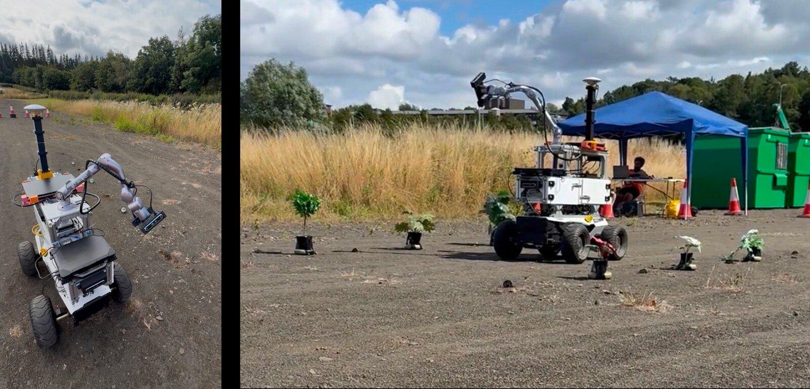
At a glance
Twelve plants, eight captures, every arm view planned offline
The experiment
Field time
Data
The plants and the robot
Twelve artificial plants, measured by hand and by robot
Artificial plants do not grow, so each was measured by hand four times and captured under every protocol with the same geometry. The platform is ALFRED 2.0: an AgileX Hunter 2.0 base, a Unitree Z1 arm carrying two RealSense D457 RGB-D cameras, an Ouster OS1-32 LiDAR and RTK-GNSS.
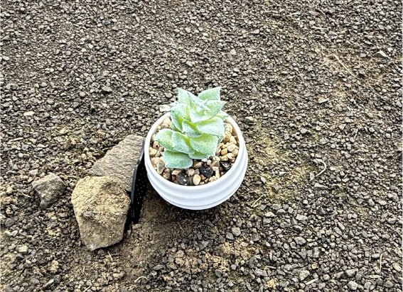
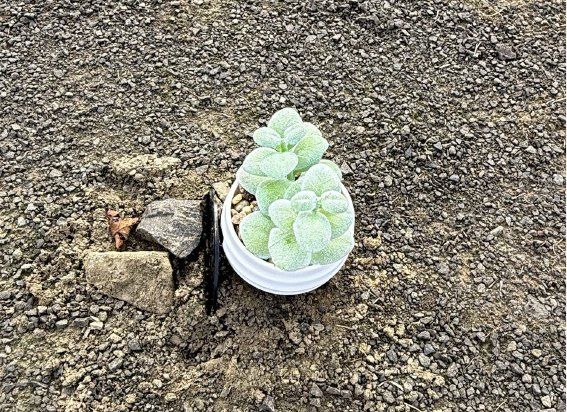
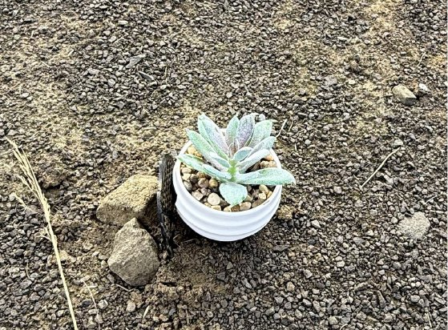
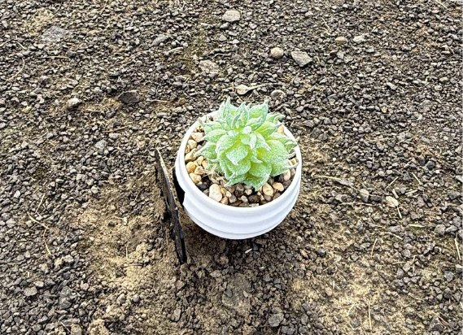
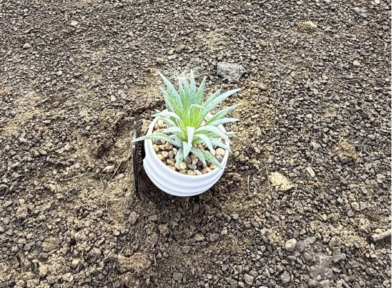
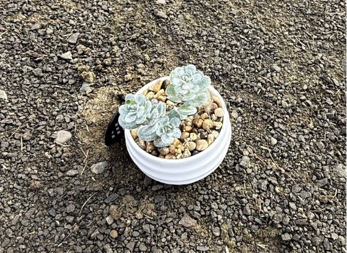
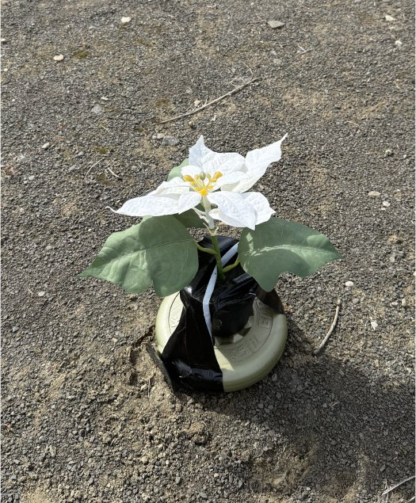
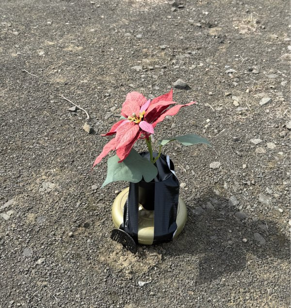
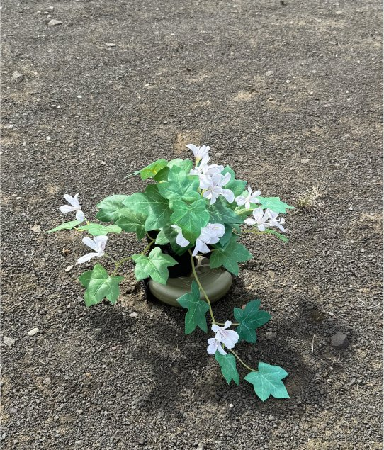
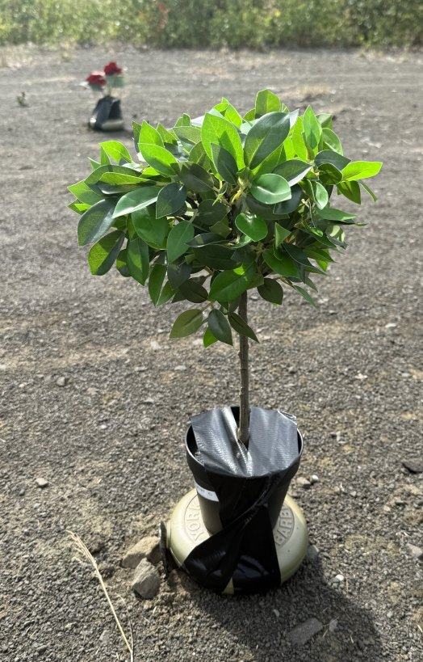
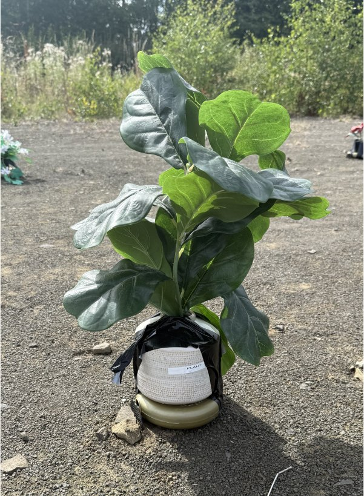
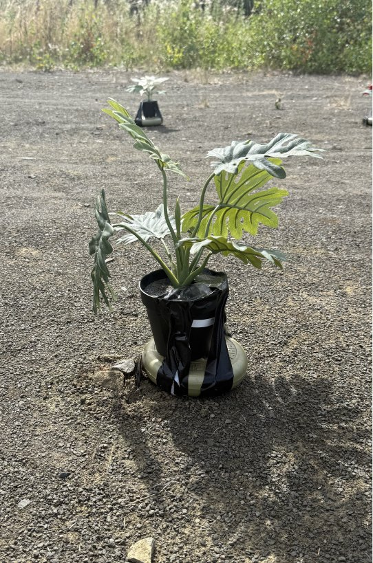


Stage 1 · Commission · once per field
One manually driven loop fixes the plot frames, route and stations
Reflective markers are placed at the plot corners and the operator drives the robot once round the area it may use, back to the start. The loop builds an RTK-anchored LiDAR reference map; from it the operational boundary and terrain are extracted and the markers detected and assigned to plot corners. The base route, inspection stations and sensing volumes follow from the approved plots. Commissioning needed no manual correction.
Stage 2 · Scout · each visit
A LiDAR pass along the commissioned route records the current scene
On each visit the robot drives the commissioned route with the chassis LiDAR recording, while the commissioned artefacts stay fixed. The scan is mapped, registered to the reference map and converted into the target and occluder geometry the plan stage uses.
Stage 3 · Plan · offline
Arm views and motions are chosen from the scout map, not in the field
At each inspection station the planner predicts which target surfaces every reachable arm pose would observe, selects a budgeted set of complementary views, six per side from a precomputed action library, and joins them with self-collision-checked joint-space motions. The utility favours close, central and head-on views from several directions, seen by both cameras. Planning runs on a computing cluster between scouting and execution; the route and stations are fixed at commissioning and are not replanned.
Stage 4 · Execute · same day
The plan is executed with no arm view chosen in the field
The base follows the route with the online localisation and navigation of the scout stage, and at each station the arm runs the planned sequence, pausing for a second at each view. Planned acquisition was compared with Fixed, a camera tilted down from the robot, and Random, poses drawn from the same library. Station times were a near-constant 1.74 times the plan.
Stage 5 · Phenotype · offline
From one view to a fused plant model
Plants are detected and segmented in every frame, and the views are registered and fused only if they pass consistency checks. Height, widths and footprint are then measured from single views, fused views and the LiDAR map.
Gaussian-splat reconstructions
The same field recordings reconstructed as 3D Gaussian splats. They are not metric and no trait is measured from them. A flythrough of each scene, then each of the twelve plants on its own; click a tile, or press Enter on it, to pause and resume the orbit.
Large cohort
Small cohort
Citation
@article{johnson2026rowcast,
title = {{ROWCAST}: offline-planned mobile-manipulator phenotyping
for crop rows},
author = {Johnson, Ciar{\'a}n Miceal and Singh, Prabhneet and
Koskinopoulou, Maria and McConnell, Alistair and
Auat Cheein, Fernando and Tonneau, Steve},
year = {2026},
note = {Manuscript under review}
}